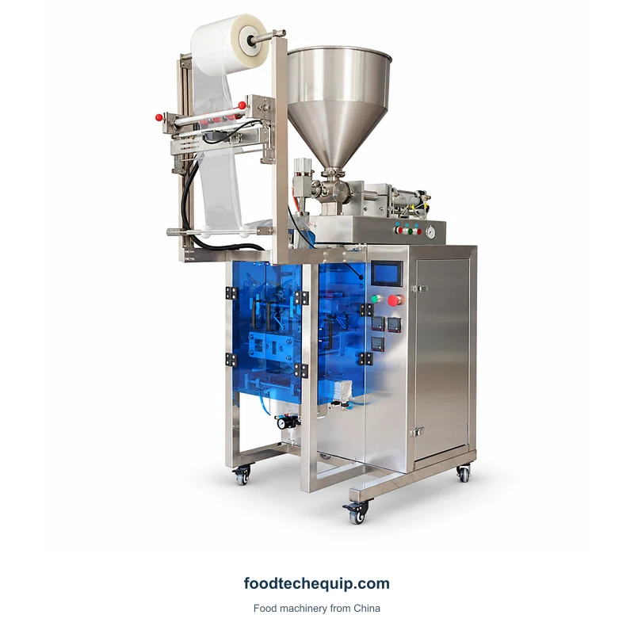
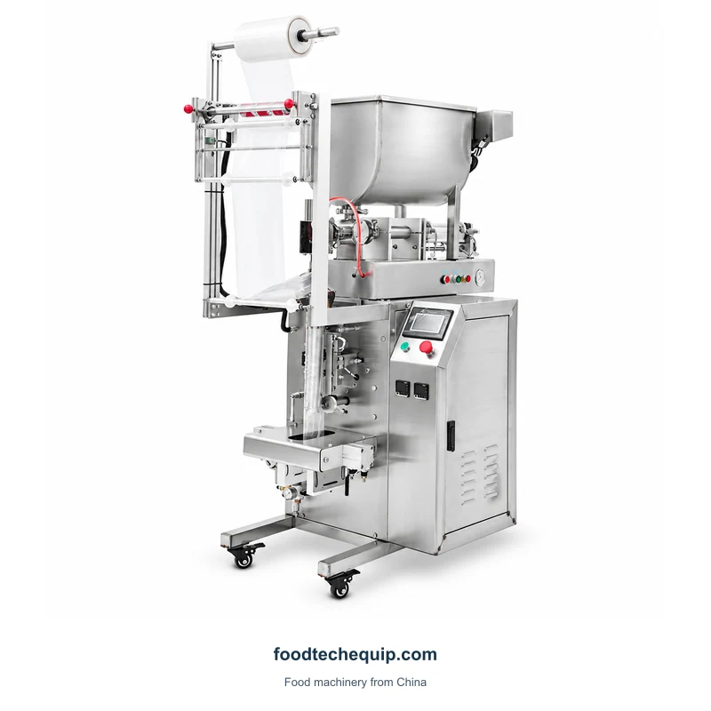

การบรรจุซองขนาดเล็ก
เครื่องบรรจุเม็ดลงซอง
เครื่องบรรจุเม็ดลงซองแนวตั้งพร้อมกรวยป้อนและชุดดึงฟิล์ม ความเร็วที่ระบุคือ 10–23 ซอง/นาที
ดูอุปกรณ์เริ่มต้นด้วยวัสดุและซองสําเร็จรูป ให้ส่วนเป้าหมายความยาวและความกว้างการก่อสร้างฟิล์มและรูปแบบการปิดผนึก แพ็ครูปอาจต้องการภาพวาดที่กําหนดเส้นขอบซีลและเส้นตัด
เครื่องบรรจุเม็ดลงซองแนวตั้งพร้อมกรวยป้อนและชุดดึงฟิล์ม ความเร็วที่ระบุคือ 10–23 ซอง/นาที
ดูอุปกรณ์
เครื่องขึ้นรูปซองรูปทรงพิเศษจากฟิล์มสำหรับของเหลวหรือซอส ชุด 200 ระบุความเร็ว 35–100 ถุง/นาที
ดูอุปกรณ์
เครื่องบรรจุเม็ดพร้อมชุดด้านบนแบบหลายส่วนและชุดป้อนฟิล์มในตัว
ดูอุปกรณ์
อุปกรณ์บรรจุภัณฑ์ซองของเหลวที่มีกรวยฟีดและปิดส่วนบรรจุภัณฑ์ที่ต่ํากว่า
ดูอุปกรณ์
เครื่องบรรจุเม็ดแบบแนวตั้งพร้อมถังป้อน โครงป้อนฟิล์ม และส่วนทำงานที่มีฝาครอบ
ดูอุปกรณ์
เครื่องบรรจุซอสแบบแนวตั้งพร้อมชุดป้อนฟิล์มด้านบนและท่อขึ้นรูปซอง
ดูอุปกรณ์
อุปกรณ์ซองซอสแนวตั้งพร้อมถังกรวยม้วนฟิล์มและตู้ควบคุม
ดูอุปกรณ์
เครื่องบรรจุของเหลวลงซองแบบแนวตั้งพร้อมชุดขึ้นรูป จุดต่อป้อน และชุดควบคุม
ดูอุปกรณ์
เครื่องบรรจุผงลงซองแบบแนวตั้งพร้อมชุดฟิล์ม ชุดขึ้นรูป และชุดควบคุม
ดูอุปกรณ์
อุปกรณ์บรรจุภัณฑ์ของเหลวแนวตั้งสําหรับ PET ฟิล์มคอมโพสิต
ดูอุปกรณ์
อุปกรณ์บรรจุภัณฑ์ซองซอสแนวตั้งพร้อมถังฟีดด้านบนและชุดจัดการฟิล์ม
ดูอุปกรณ์
เครื่องบรรจุซองแบบถ้วยตวงปริมาตร พร้อมตัวเลือกถ้วยใหญ่ ถ้วยเล็ก และถ้วยแกว่ง
ดูอุปกรณ์
เครื่องบรรจุซอสลงซองพร้อมถังป้อน ชุดป้อนฟิล์ม และชุดควบคุม
ดูอุปกรณ์
เครื่องบรรจุเม็ดแบบถ้วยตวงปริมาตร พร้อมป้อนจากด้านบนและป้อนฟิล์มแนวตั้ง
ดูอุปกรณ์
เครื่องบรรจุเม็ดลงซองแบบแนวตั้ง พร้อมชุดป้อนด้านบน ชุดป้อนฟิล์ม และระบบควบคุมด้านหน้า
ดูอุปกรณ์
เครื่องบรรจุผงลงซองพร้อมถังป้อน ชุดฟิล์มแนวตั้ง และชุดควบคุม
ดูอุปกรณ์
เครื่องบรรจุซองแบบถ้วยตวงปริมาตร พร้อมถังป้อน แกนรองม้วนฟิล์ม และส่วนบรรจุแนวตั้ง
ดูอุปกรณ์ลองใช้คําหลักอื่นหรือล้างตัวกรองของคุณ
ผงเม็ดของเหลวและซอสต้องจัดเตรียมอาหารที่แตกต่างกัน แบ่งปันตัวอย่างวัสดุส่วนเป้าหมายและรูปแบบการปิดผนึกเพื่อกําหนดซองสําเร็จรูป
เปรียบเทียบอัตราบรรจุภัณฑ์และขนาดฟิล์มสําหรับการกําหนดค่าที่เลือก แยกแยะความกว้างม้วนความกว้างถุงสําเร็จรูปและความยาวถุงในรูปวาดของคุณ
| เลือกพื้นที่ | เกณฑ์เปรียบเทียบ | สิ่งที่จะให้ |
|---|---|---|
| ฟีดวัสดุ | ผงเม็ดหรือสภาพของเหลว | ตัวอย่างวัสดุและส่วนเป้าหมาย |
| การสร้างแพ็ค | ขนาดม้วนเทียบกับขนาดซองสําเร็จรูป | ข้อกําหนดฟิล์มและภาพวาดสําเร็จรูป |
| การปลดปล่อย | วิธีการบรรจุแต่ละแพ็ค | การจัดการ Downstream และพื้นที่ว่าง |
งานซองรวมถึงชุดรับและการเตรียมส่วน หากคุณต้องการปริมาณที่วัดได้สําหรับขั้นตอนบรรจุภัณฑ์ที่มีอยู่ให้เปรียบเทียบการแยกแบบมิเตอร์ อธิบายแพ็คสําเร็จรูปและการดําเนินการที่ใบเสนอราคาควรจะรวมถึง